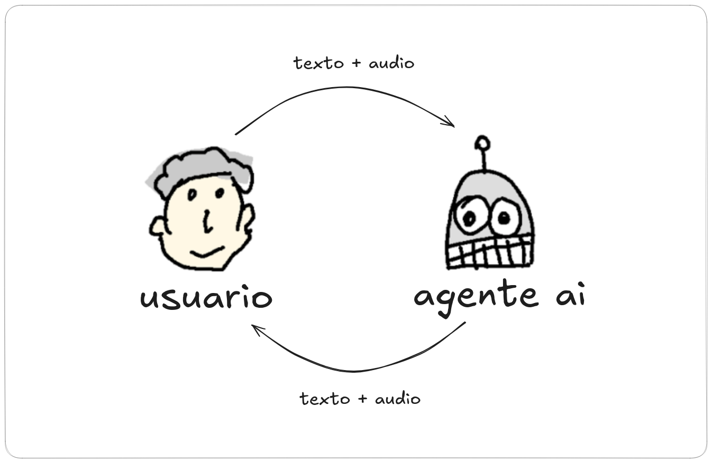
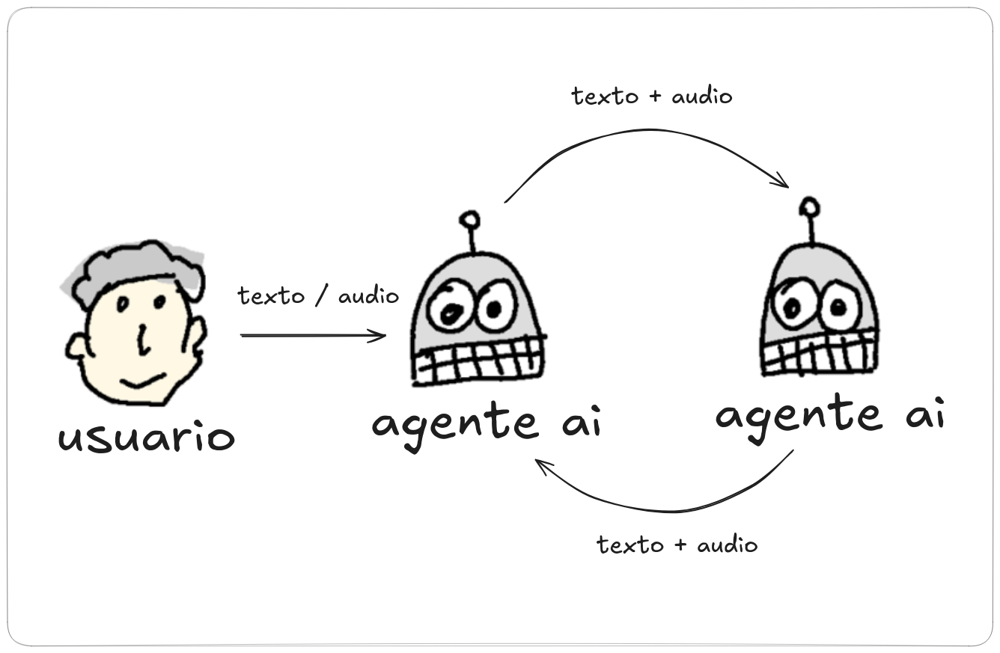
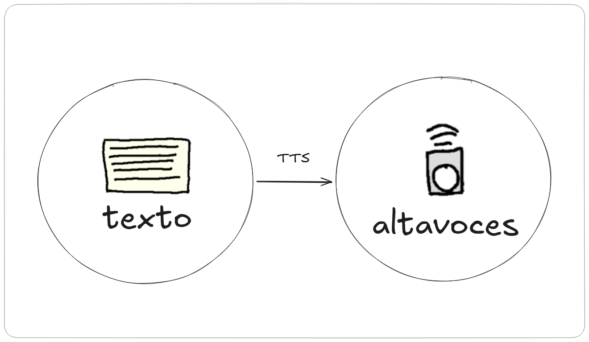
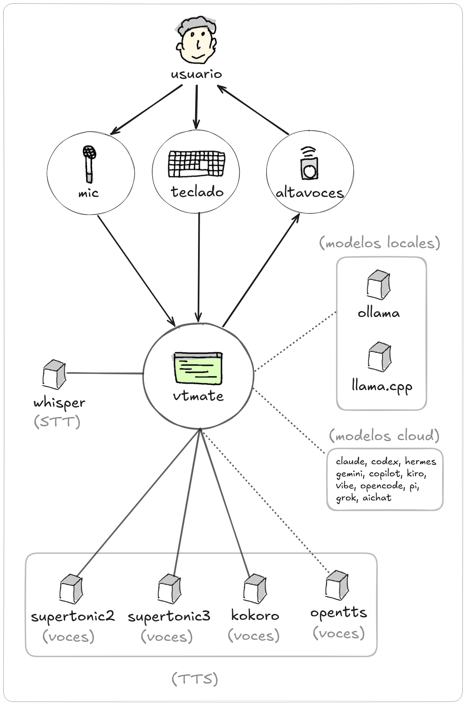

Descarga Inmediata
vtmate
El sistema final de conversacion por voz con IA ejecutandose directamente en tu terminal. Habla con naturalidad, transcribe con whisper integrado, procesa con modelos locales o remotos y recibe respuestas de voz realistas con latencia muy baja.

Modo de Conversación

Modo de Debate

Modo de Lectura

Cómo funciona

Idiomas Soportados
| ID | Idioma | Soporte | Soporte TTS |
|---|---|---|---|
| en | 🇬🇧 Inglés | 🏆 Mejor soporte | ✅ Kokoro ✅ OpenTTS |
| es | 🇪🇸 Español | 🏆 Mejor soporte | ✅ Kokoro ✅ OpenTTS |
| zh | 🇨🇳 Chino mandarín | 🏆 Mejor soporte | ✅ Kokoro ✅ OpenTTS |
| ja | 🇯🇵 Japonés | 🏆 Mejor soporte | ✅ Kokoro ✅ OpenTTS |
| pt | 🇵🇹 Portugués | 🏆 Mejor soporte | ✅ Kokoro ❌ OpenTTS |
| it | 🇮🇹 Italiano | 🏆 Mejor soporte | ✅ Kokoro ✅ OpenTTS |
| hi | 🇮🇳 Hindi | 🏆 Mejor soporte | ✅ Kokoro ✅ OpenTTS |
| fr | 🇫🇷 Francés | 🏆 Mejor soporte | ✅ Kokoro ✅ OpenTTS |
| ar | 🇸🇦 Árabe | Soportado | ❌ Kokoro ✅ OpenTTS |
| bn | 🇧🇩 Bengalí | Soportado | ❌ Kokoro ✅ OpenTTS |
| ca | 🇪🇸 Catalán | Soportado | ❌ Kokoro ✅ OpenTTS |
| cs | 🇨🇿 Checo | Soportado | ❌ Kokoro ✅ OpenTTS |
| de | 🇩🇪 Alemán | Soportado | ❌ Kokoro ✅ OpenTTS |
| el | 🇬🇷 Griego | Soportado | ❌ Kokoro ✅ OpenTTS |
| fi | 🇫🇮 Finlandés | Soportado | ❌ Kokoro ✅ OpenTTS |
| gu | 🇮🇳 Gujarati | Soportado | ❌ Kokoro ✅ OpenTTS |
| hu | 🇭🇺 Húngaro | Soportado | ❌ Kokoro ✅ OpenTTS |
| kn | 🇮🇳 Kannada | Soportado | ❌ Kokoro ✅ OpenTTS |
| ko | 🇰🇷 Coreano | Soportado | ❌ Kokoro ✅ OpenTTS |
| mr | 🇮🇳 Marathi | Soportado | ❌ Kokoro ✅ OpenTTS |
| nl | 🇳🇱 Holandés | Soportado | ❌ Kokoro ✅ OpenTTS |
| pa | 🇮🇳 Punjabí | Soportado | ❌ Kokoro ✅ OpenTTS |
| ru | 🇷🇺 Ruso | Soportado | ❌ Kokoro ✅ OpenTTS |
| sv | 🇸🇪 Sueco | Soportado | ❌ Kokoro ✅ OpenTTS |
| sw | 🇰🇪 Suajili | Soportado | ❌ Kokoro ✅ OpenTTS |
| ta | 🇮🇳 Tamil | Soportado | ❌ Kokoro ✅ OpenTTS |
| te | 🇮🇳 Telugu | Soportado | ❌ Kokoro ✅ OpenTTS |
| tr | 🇹🇷 Turco | Soportado | ❌ Kokoro ✅ OpenTTS |